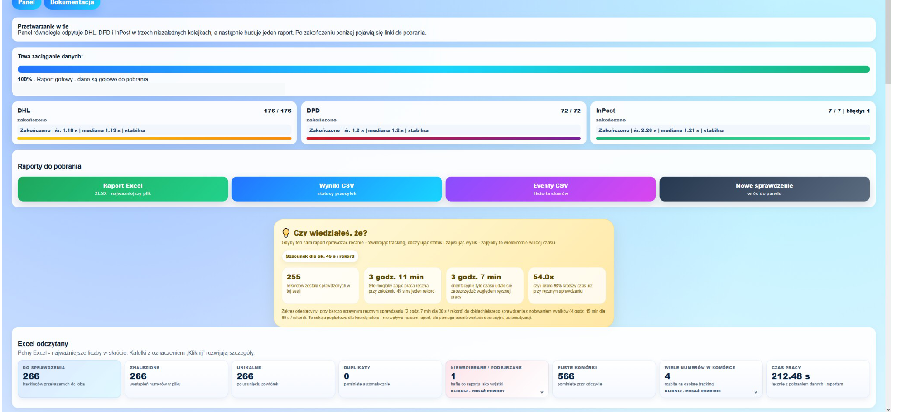
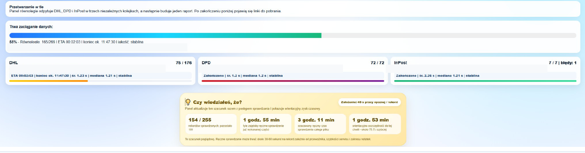

Problem operacyjny
Pracownik potrzebował szybko rozpoznać, które przesyłki są doręczone, opóźnione, zwracane albo wymagają dalszego działania — bez otwierania osobno każdej strony przewoźnika.
Projekt służbowy · PYC-SPORT · 2026
Jedno narzędzie do importu danych, pobrania statusów DHL, DPD i InPost oraz przygotowania wspólnego raportu dla przesyłek wymagających kontroli.
Kod nie jest publiczny. Case study zawiera wyłącznie zanonimizowane materiały i dane przykładowe.

Działający pilotInformacje o przesyłkach były rozproszone pomiędzy systemami przewoźników. Ręczne sprawdzanie numer po numerze utrudniało regularną kontrolę większych zestawień.
Pracownik potrzebował szybko rozpoznać, które przesyłki są doręczone, opóźnione, zwracane albo wymagają dalszego działania — bez otwierania osobno każdej strony przewoźnika.
Umożliwić zbiorczą kontrolę przesyłek, ujednolicić statusy z trzech źródeł i przygotować wynik w formacie przydatnym do dalszej pracy.
Panel miał wspierać decyzję człowieka, nie zastępować jej automatyczną oceną.
Projekt wynikał z mojej znajomości procesu. AI było narzędziem wspierającym implementację i analizę błędów — nie zastępowało decyzji o zakresie ani weryfikacji działania.
Zidentyfikowałem problem, określiłem dane wejściowe, potrzebne statusy, wyjątki i strukturę raportu. Ustaliłem również sposób rozpoznawania przewoźnika i zachowanie panelu przy błędzie pojedynczego numeru.
Przygotowałem działający panel przy wsparciu AI, testowałem go na rzeczywistych zbiorach, analizowałem błędy i opisałem sposób korzystania oraz ograniczenia rozwiązania.
Użytkownik dostarcza dane tylko raz. Panel rozdziela zadania pomiędzy przewoźników, pokazuje postęp i na końcu przygotowuje wspólny wynik.
Wczytanie pliku Excel albo wklejenie listy numerów przesyłek.
Przypisanie numerów do DHL, DPD lub InPost. GLS może zostać rozpoznany, ale jego integracja pozostaje nieaktywna.
Niezależne kolejki pobierają statusy, historię zdarzeń i informacje potrzebne do raportu.
Pojedynczy niepoprawny numer nie zatrzymuje całego zadania. Użytkownik widzi postęp oraz problemy wymagające sprawdzenia.
Panel udostępnia raport Excel, zestawienie statusów CSV, historię zdarzeń CSV i podsumowanie operacji.
Materiały pokazują momenty ważne dla użytkownika: kontrolę postępu oraz gotowy raport. Każdy ekran można otworzyć w pełnej rozdzielczości.

Najważniejszym dowodem nie jest liczba użytych bibliotek, lecz możliwość przejścia przez cały proces na rzeczywistych danych operacyjnych.
Panel potrafił rozdzielić dane pomiędzy trzy aktywne integracje, zebrać statusy i zdarzenia, kontynuować pracę mimo błędów pojedynczych rekordów oraz przygotować pliki wynikowe.
Dla przykładowej próbki 255 rekordów wykonanie panelu trwało około 3 minut i 7 sekund. Porównanie z czasem ręcznym jest szacunkiem testowym, a nie pomiarem stałego procesu sprzed wdrożenia.
Narzędzie było działającym pilotem uruchamianym przez Google Colab i tymczasowy tunel Cloudflare. Nie miało docelowego hostingu, systemu logowania ani pełnego monitoringu produkcyjnego.
Python, Flask, JavaScript, REST API przewoźników, Excel, CSV, Google Colab i Cloudflare Tunnel.
Stały hosting, autoryzacja użytkowników, bezpieczne zarządzanie konfiguracją, monitoring, testy integracyjne i formalne utrzymanie wersji produkcyjnej.
Widoki w portfolio nie zawierają danych klientów, numerów przesyłek, danych dostępowych, tokenów API ani prywatnych adresów panelu. Nazwy i rekordy są przykładowe lub zanonimizowane. Kod nie jest publikowany.